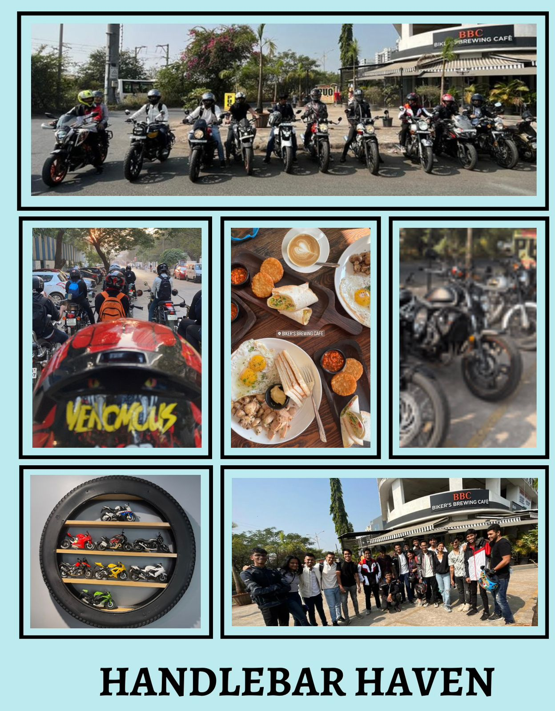
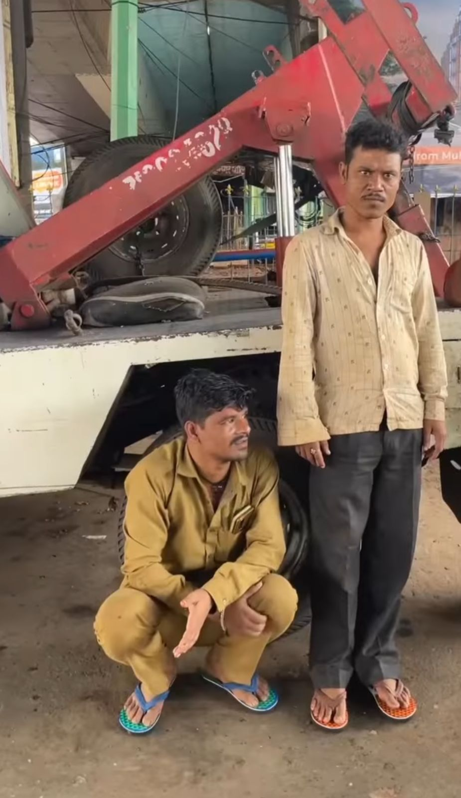

Super Vendors
An entrepreneurship development project was carried out for all the local vendors in Thane. The club shot short videos(Reels) of each of the local vendors and posted it on the clubs instagram handle for getting them recognition.

Handlebar Haven
A club service initiative, A bike ride was arranged in mumbai itself, it was a morning full of enthusiasm and energy for our members.

SSS2
A Sports initiative was being done to promote gender equlaity to show support towards women empowerment as a whole.

Soles 4 Souls
A Partners in Service initiative in which club distributed a huge number of footwear in and around Thane to all underprivileged kids as well as the adults in the society. The reel of this project has around 65k views on instagram.